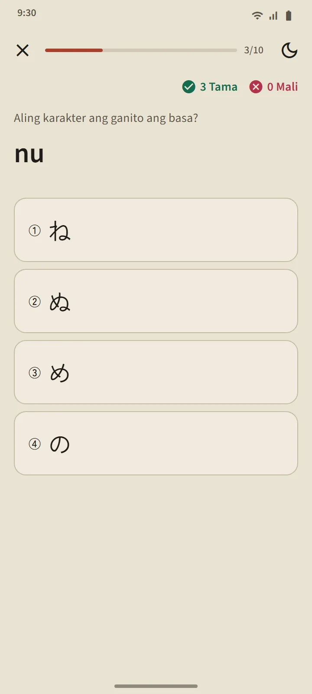

Talaang nagsisilbi ring listahan ng aralin
Bumubukas ang mga pahina ng Hiragana at Katakana mula sa seksyong "Mga batayan ng Hapones" ng home screen. Binibilang ng summary card sa itaas ang mga karakter na alam mo; nahahati sa tatlong grupo ang talaan sa ibaba: Batayan (46 na karakter), May marka (dakuten at handakuten), at Pinagsama (きゃ, しゅ, ちょ at iba pa). Ang cell na puno ang kulay ay nangangahulugang Alam na, at ang cell na may balangkas lang ay nangangahulugang kasalukuyang pinag-aaralan.

Isang aralin bawat hanay
Isang aralin ang bawat hanay ng talaan: mga kahon ng karakter na ita-tap mo para marinig, romaji, marka ng alam na, stroke order ng bawat karakter, at "Mga salitang kaya mong basahin": mga totoong salita sa dictionary na binubuo lang ng mga karakter na natutunan hanggang sa hanay na iyon, na nasa likod ng isang button ang romaji para subukan mo munang basahin. Tinatapos ang aralin ng button na "Pagsusulit sa hanay na ito".

Mga tuntunin sa pagbasa
Ipinapaliwanag ng huling grupo ng bawat talaan ang mga tuntuning kadalasang pinagkakamalan ng mga baguhan: ang maliit na っ at mahahabang patinig sa hiragana; ang mahabang marka na ー, ang maliit na ッ, at ang mga kombinasyon ng loanword (ファ, ティ, ウィ) sa katakana. May mga halimbawang salita ang bawat tuntunin na kaya mong basahin.
Mga pagsusulit na may sampung tanong, walang pag-reschedule
Tatlong uri ng tanong ang gamit ng pagsusulit sa kana: karakter papunta sa romaji, romaji papunta sa karakter, at tunog papunta sa karakter. Nagiging Alam na ang isang karakter pagkatapos ng tatlong tamang sagot nang sunod-sunod, at bumabalik sa Natututo kapag nagkamali. Hindi tulad ng mga salita at kanji, hindi nire-reschedule ang mga karakter: kapag nabasa mo na ang lahat, tapos na ang talaan. Ipinapakita ng buod ng pagsusulit ang iskor mo, ang mga bagong Alam na karakter, at ang mga nagkamali ka.

Saan magsisimula
Sa unang pagbukas ng app, itinatanong kung magsisimula ka sa wala o marunong ka nang magbasa ng hiragana. Ang sagot mo ang magtatakda ng isang mungkahi sa Home: "Magsimula sa hiragana" para sa mga baguhan, ang unang 20 salita para sa iba. Walang checklist na kailangang tapusin: ang parehong kard ay may link sa maikling tutorial ng bawat feature, at maisasara ito anumang oras.